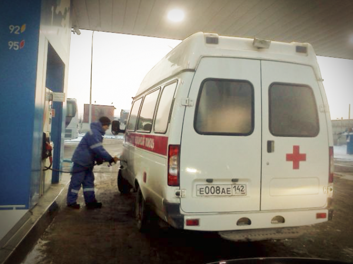

С заправками в Кемерове ситуация не очень. Может она и вообще не очень, но живём и загрязняем атмосферу мы именно в Кемерове. Количество автомобилей за последние годы на дорога города, конечно, выросло. А вот количество АЗС вроде нет. Вот и приходится тратить по 30 минут, стоя в очереди не заправке. По 30 минут и по сколько-то там литров того же самого бензина (ну ладно, не литров, но тратить).
Лет 5 бывало подъедешь на заправку, скажешь: «Мне на 100 рублей», и поехал до следующей. Заправляться сегодня меньше чем по баку, стало непозволительной роскошью. Слишком жалко проводить в очереди по 30 минут.
Заправляюсь я только на «Газпромнефти». Так у них ещё есть программа лояльности. При каждой заправке на карту начисляют сколько-то денег, которые потом можно будет потратить тоже на заправку. Максимальная скидка, по моим подсчётам, получается 5%. Не круто, но лучше чем ничего. Сейчас карты работают ещё в более-менее вменяемом режиме, а летом вовсе нужно было сначала заправиться, а потом ещё раз идти к оператору для зачисления скидки.
Заправлять, как уже упомянул, стараюсь всегда полный бак минус 10 литров. Вот и сегодня пришла необходимость посвятить вечер стоянию и сидению. Т.е. в очереди на заправке я как бы стою, но и сижу в то же время.
Приехал не так чтобы поздно, около 8-ми вечера. Передо мной было всего 4 машины (за мной потом встали ещё 5). Это значит минут 20, в лучшем случае потерянного вечера. И вот я стою себе стою. Подходит моя очередь и вдруг задом вместо меня подъезжает скорая.

Я открываю окно и говорю: «Господа (конечно я не говорил это слово, но смысл был тот же), а что собственно здесь за попрание прав и скорый беспредел». На что заправщик мне отвечает «У нас распоряжение, „скорые“ без очереди». Человек я не скандальный, поэтому закрыл окно и заткнулся.
Когда пришла моя очередь, я поинтересовался у оператора причинами такого поведения. Она ответила то же самое — «Распоряжение руководства, спецмашины без очереди».
Я человек законопослушный, и людей, в основном, уважающий. Но изображение Христа на облупленной стене или вид «скорой» в транспортном потоке сам по себе меня не возбуждает и священного трепета не вызывает. Поэтому вот и думаю я. В чём отличие «скорой» стоящей на заправке от маршрутного такси, стоящего там же?
Если вам до сих пор кажется, что я не прав, и вообще человек, который не достоин звания человека, попробуйте представить на месте скорой, к примеру, машину полиции, которую все так не любят.
Я не поленился и позвонил в «Газпромнефть» по телефону 8-800-700-5151, дабы уточнить наличие «распоряжения». Оператор сослалась на регламент, но приняла жалобу и обещала передать её специалисту. Ответ, я уверен, будет, потому что однажды я уже жаловался на отсутствие 95-го бензина на трёх АЗС в Кемерове. Перезвонили, извинились, сослались не перебой в поставках.
Upd. Вопрос исчерпан. Приоритет автомобилей спецслужб обозначен «Правилами технической эксплуатации автозаправочных станций», спасибо black_raven.
«Внеочередное обслуживание предусмотрено для специального автотранспорта (скорая помощь, милиция, пожарная охрана, аварийные газового хозяйства), автомобилей под управлением инвалидов войны и труда, Героев СССР и России, а также других категорий лиц; »